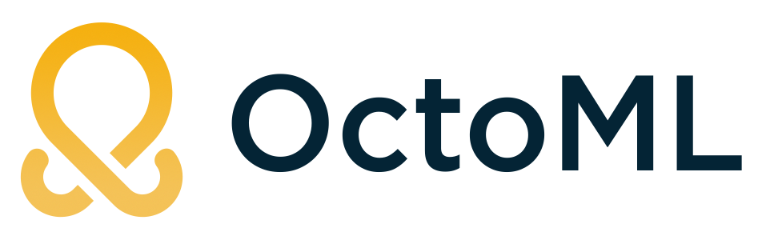
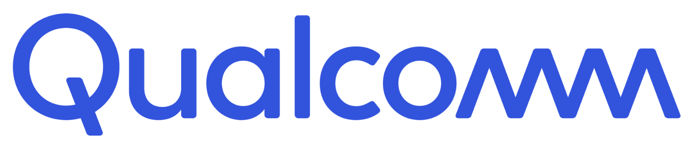

About
Apache TVM is an open-source deep learning compiler stack for CPUs, GPUs, and specialized accelerators. It aims to close the gap between the productivity-focused deep learning frameworks, and the performance- or efficiency-oriented hardware backends.
We are excited to announce the 2020 TVM Virtual Conference, December 2-4. The TVM Conference will cover the state of the art of deep learning compilation optimization. We welcome TVM contributors, potential users, UW SAMPL sponsors, collaborators and researchers and practitioners from the broader community. The conference will discuss recent advances in frameworks, compilers, systems and architecture support, security, training and hardware acceleration.
Resources
2020 Program
| Dec 2 - Tutorials | |||
|---|---|---|---|
| Time | Title | Speakers | Organization |
| 9:00 | Introduction to TVM | Chris Hoge | OctoML |
| 10:15 | TVMC: A Command-Line Driver for TVM | Leandro Nunes | Arm |
| 11:30 | Bring Your Own Codegen to TVM | Zhi Chen, Cody Yu | Amazon Web Services |
| 1:00 | uTVM: Running the TVM Stack on Bare Metal | Andrew Reusch | OctoML |
| Dec 3 - Conference | |||
| Time | Title | Speakers | Organization |
| 9:00 | Keynote and Community Update | Luis Ceze | OctoML |
| Tianqi Chen | OctoML | ||
| Wilson Yu | AMD | ||
| Jem Davies | Arm | ||
| Kavitha Prasad | Sima | ||
| Yida Wang | Amazon Web Services | ||
| Jason Knight | OctoML | ||
| 10:00 | Break | ||
| 10:15 | TVM at AWS | Yida Wang, Yao Wang, Yong Wu, Haichen Shen, Wei Xiao | Amazon Web Services |
| 10:45 | TVM at Imagination | Ashutosh Parkhi, Jaydeep Patil | Imagination Technologies |
| 10:51 | TVM at Synopsys & ITRI | Kerwin Tung, Chuck Pilkington, Dexian Li, | ITRI (Industrial Technology Research Institute) |
| 10:57 | A Generic Method to Utilize Vendor-specific AI Accelerator on Android Mobile for TVM | Ming-Yu Hung, Ming-Yi Lai | MediaTek Inc. |
| 11:03 | Extending TVM to Support Custom ML Hardware | Joey Chou, Randy Allen | SiMa.ai |
| 11:10 | Break | ||
| 11:20 | Advances in Learning Systems Research | Joey Gonzalez | UC Berkeley |
| 11:50 | Lorien: A Scale-Out System and Database for Auto-Tuning Tensor Programs | Cody Yu | Amazon Web Services |
| 12:10 | Lunch Break | ||
| 12:50 | TVM at ARM | Ramana Radhakrishnan | Arm |
| 13:20 | TVM at OctoML | Jason Knight | OctoML |
| 13:40 | Break | ||
| 14:00 | Lightning Talks Day 1 | Various | Various |
| Dec 3 - Lightning Talks | |||
| Time | Title | Speakers | Organization |
| 14:00 | Graph-Level Scheduling Optimization with Polyhedral Analysis for Tensor Programs | Jie Wang | Amazon Web Services |
| 14:06 | FeatGraph: A Flexible and Efficient Backend for Graph Neural Network Systems | Yuwei Hu | Cornell University |
| 14:12 | UNIT: Unifying the Compilation of Tensorization | Jian Weng | UCLA |
| 14:18 | RAFT:Accelerating the Tuning Process for AutoTVM | HaiWen Fu, XiaoHua Shi, Yuchen Feng | Beihang University |
| 14:24 | A TVM IR to MLIR Automatic Converter : Bridging TVM with MLIR Ecosystem | Jinman Zhao | Huawei Technologies Canada/ University of Toronto |
| 14:30 | BERT Inference Optimization Using TVM | Haichen Shen | Amazon Web Services |
| 14:36 | Writing Sparse Operators in TIR | Tristan Konolige | OctoML |
| 14:42 | Automatic Differentiation on Tensor Expression | Yizhi Liu | Amazon Web Services |
| 14:48 | Optimizing Automatic Tuning Process of TVM Based on Parallel Genetic Algorithm | YuChen Feng, XiaoHua Shi, HaiWen Fu | Beihang University |
| 14:54 | Overhauling the Onnx Importer to Support Dyanmism | Matthew Brookhart, Lily Orth-Smith | OctoML |
| 15:00 | AdaTune: Adaptive Tensor Program Compilation Made Efficient | Menghao Li | Microsoft |
| Dec 4 - Conference | |||
| Time | Title | Speakers | Organization |
| 9:00 | Machine Learning Attacks and how to use KubeFlow Pipelines to Defend | David Aronchik | Microsoft |
| 9:30 | MLIR and MLIR in the TensorFlow Ecosystem | Jacques Pienaar | |
| 10:00 | Break | ||
| 10:15 | Bringing Vitis-AI Hardware Acceleration to TVM for Cloud and Edge | Jorn Tuyls | Xilinx |
| 10:35 | TVM at Alibaba | Xiaoyong Liu | Alibaba |
| 10:55 | End-to-End Performance Assessment of AI Systems with TVM and Virtual Models | Michael J. Klaiber | Bosch Corporate Research |
| 11:15 | Break | ||
| 11:30 | TVM at Qualcomm | Krzysztof Parzyszek | Qualcomm |
| 11:50 | TVM for Edge Inference at AMD | Mei Ye, David Marques | AMD |
| 12:10 | Lunch Break | ||
| 12:50 | Ansor : Generating High-Performance Tensor Programs for Deep Learning (An auto-scheduler for TVM) | Lianmin Zheng | UC Berkeley |
| 13:10 | TVM Object System: Multi-language Support for just $19.99 | Jared Roesch | OctoML |
| 13:20 | Break | ||
| 13:40 | Lightning Talks Day 2 | Various | Various |
| Dec 4 - Lightning Talks | |||
| Time | Title | Speakers | Organization |
| 13:40 | AutoTIR - Bringing Automatic Scheduling to TIR | Junru Shao | OctoML |
| 13:46 | Real-time AI on Edge Servers with TVM | Kazutaka Morita | NTT |
| 13:52 | Integrating and Simulating Hardware Accelerators in TVM | Luis Vega | OctoML |
| 13:58 | Tensorization, Scheduling and Allocation for Machine Learning Inference Accelerators | Hongbin Zheng, Randy Huang | Amazon Web Services |
| 14:04 | AArch64 Pre-Quantized Networks Performance | Giuseppe Rossini | Arm |
| 14:10 | Hardware-aware Quantization in TVM | Ziheng Jiang, Animesh Jain | OctoML, AWS |
| 14:16 | Integrating the Arm Ethos-N NPUs into TVM | Matthew Barrett | Arm |
| 14:22 | Running AI WASM Model Securely in Sandbox using TVM and Wasmtime | Leon Wang | Huawei |
| 14:28 | Ethos-U55 : microNPU Support for uTVM | Manupa Karunaratne | Arm |
| 14:34 | Enable TVM QNN on RISC-V with Subword SIMD Computation | Jenq-Kuen Lee, Chen Yu-Ri | National Tsing-Hua University, Taiwan |
| 14:40 | A Generic Framework Based on TVM/VTA for OpenCL-Compatible Cloud Devices | Zhang Hao, Li Jaishu | Fourth Paradigm Southeast Asia |
| 14:46 | HAWQV3: Dyadic Neural Network Quantization | Amir Gholami | UC Berkely |
TVMConf Partners


Community Sponsor
Follow us on Twitter
Follow @ApacheTVM
Tweets by ApacheTVM